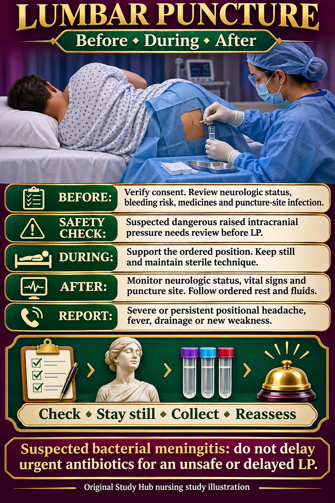

NUR 258 · Module 7 · Neurologic nursing
Lumbar puncture: nursing care
A lumbar puncture, also called a spinal tap, collects cerebrospinal fluid (CSF). Check safety, support positioning and reassess afterward.
Review contraindications before LP. Do not delay urgent antibiotics for an unsafe or delayed LP when bacterial meningitis is suspected.

Nursing steps in readable text
Before
Verify informed consent and baseline neurologic findings. Review anticoagulants, bleeding risk and puncture-site infection. Findings suggesting a mass lesion or dangerous raised ICP need clinician review before proceeding.
During
Support the ordered side-lying or seated position, preserve breathing and help the patient remain still. Maintain sterile technique. Label and send CSF specimens promptly according to policy.
After
Monitor neurologic status, vital signs and the puncture site. Follow the ordered activity and fluid plan. Report severe or persistent positional headache, fever, drainage or new weakness.
Evaluate
Compare the neurologic examination with baseline and reassess headache, puncture-site drainage and signs of infection.
Memory picture key
- Checklist gate — Verify consent, neurologic assessment and bleeding risk.
- Still statue — Help the patient maintain the ordered position and keep still.
- Sample vials — CSF is collected using sterile technique.
- Alarm bell — Reassess and report concerning symptoms.
The small memory scene uses symbols. It is an original mnemonic, not an official Picmonic product.
Course wording and current evidence on aftercare
The existing course notes teach lying flat and hydration after LP. Use the assigned ATI/course wording for your exam and the ordered clinical plan for care.
Current-evidence side note: Routine prolonged bed rest has not been shown to prevent post-dural-puncture headache. Lying down may relieve an established positional headache. This does not replace individual post-procedure orders.
Related original Simple Nursing handout
This is the original meningitis handout, which provides context for CSF testing. It is not an LP-specific handout.

Practice clinical judgment
A patient awaiting LP develops new focal weakness and declining consciousness. Proceed with routine positioning?
Show the answer
No. Stop preparation, escalate the new neurologic findings and obtain urgent clinical review before LP.
Sources and original handouts
No exact topic-specific Simple Nursing handout was found in the site’s indexed Simple Nursing collection. Existing related handouts stay with their original lessons.
Clinical sources checked November 7, 2026. Use the assigned course material and individual clinical orders. Artwork is educational and does not specify a device’s technical fitting procedure.